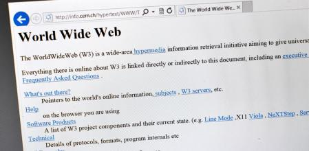
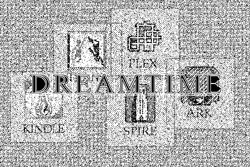

Homepage
Week 1
Week 2
Week 3
Week 4
WEEK 1 BLOG POST

Setting up Github
Setting up GitHub was effortless. However, navigating around the software has been a bit tricky because it is my first time stumbling across this platform. I haven't published on Github yet because i'm a bit uncertain on how to go about. I am planning on getting all the necessary help i can receive from my fellow classmates.
Reflection on readings
Looking at the Reading "The World-Wide Web" by Berners-Lee et al. It provides a detailed introduction to the World Wide Web (WWW) aka (W3). This platform is seen as an innovative way to share information that could be easily used by anyone regardless of where they are in the world. Berners-Lee talks about how the "Key components of the web" such as Uniform Resource Locator (URL),Hypertext Markup Language (HTML) and Hypertext Transfer Protocol (HTTP) makes navigating the web easier.
The article presents the Web as a system designed to be open, distributed, and interconnected. Sharing and exchanging knowledge across different fields, from science to education to business. Which in my opinion the web is doing exactly that and MORE taking into consideration how vast it is in this day and age. The internet can be a great place or a terrible space depending on how YOU use it.
what i found most interesting was how the original concept of WWW was not to just browse but to allow users to be web editors so that different voices can be shared. "You could use it to edit <HTML> documents on your local computer" Berners-Lee clearly saw websites as "editable destinations where users interacted with one another. He wanted to build a digital space not just of consumption but of creation as well."
"Unfortunately, the WorldWideWeb browser never really caught because it only worked on NeXT computer"s which were expensive and not everyone could afford it.
To be honest i'm glad that the WEB is not as open as Tim would have liked it to be imagine the different misconstrued ideologies one would have to face everyday when they open the NET. However a site that does embody the "editable characteristic" is wikipedia but even with that , its not as open as Tim would have liked it to be.
My goal for this course:
Is to learn and apply the components of HTML ,CSS and Javascript. And to produce a functioning website with the knowledge obtained in this course. By the end of this course ,i hope to surpass the current knowledge i have of the web and be able to critically elucidate the history of the web and its relationship to south Africa.
WEEK 2 BLOG POST

Moulthrop reading review
Moulthrop looks at Hypertext or the internet through McLuhan’s “laws of Media” to understand it. This law has 4 effects which are:
Enhancement: Allows for a More interactive experience. Hypertext enhances the reader's ability to interact with text.( How a technology enhances existing capabilities.)
Obsolescence: Hypertext makes traditional, linear forms of writing and reading (such as books and newspapers) obsolete.( What the technology makes obsolete.)
Retrieval: Hypertext retrieves older forms of communication, especially oral and non-linear storytelling. This can be seen in the way hypertext resembles oral traditions, where narratives could shift and change depending on context, audience, and interaction.( What older technology or process it retrieves.)
Reversal: Hypertext, when pushed to extremes, may lead to fragmentation and disorientation. The complexity and infinite possibilities that hypertext presents could overwhelm readers, making it difficult to follow a coherent narrative or even understand the text as a whole.(How the technology, when pushed to extremes, may reverse its effects)
Moulthrop applies these laws to hypertext and argues that hypertext significantly transforms how we interact with information allowing us to create new ways of constructing or consuming digital content.
In the reading, the internet is seen as this disruptive technology that challenges traditional modes of storytelling, education, and communication. He doesn’t see this as something bad but rather progressive. Even though Moulthrop sees this transformation as something positive, he does however note that the complexity and interactivity of hypertext might result in readers becoming overwhelmed or disoriented. Which in my opinion, is something that happens in this day and time. When we have to much information at our disposal we tend to feel a bit overwhelmed.
Website Design
Honestly I would like to make my website simple and loud (I still don’t understand what I mean by this but I believe I will as time goes). I’ve changed my wireframe structure at least three times because I’m not really sure how I want it to look exactly “Aesthetically”.
I have attached links to inspirational websites that i'll be using as reference throughout the process of my web design
WEEK 3 BLOG POST

My user alignment for my creative Multi-Content Website:
I plan to produce a cohesive experience while creating intuitive pathways that guide visitors through my diverse content. My target audience are creatives across all platforms. These are web designers, filmmakers, photographers etc. With this in mind I intend to create a navigation system that encourages these different users to explore my web and to not feel overwhelmed or confused by my different content types.
My Content Organization
Each content will be put into its perspective category: Essays, Blogs, Photography,Film, and Web design. These are my current categories, but they are subjected to change whether its adding or removing. I will be keeping each category presentation consistent, but they will have unique attributes. For example the Photography and film sections will be more visually driven, while essays and blogs will prioritize readability with complementary visuals.
My User Experience flow
My Homepage will be very minimalistic, there’ll be a use of large, high-quality visuals with brief descriptive text to immediately communicate my creative identity as well as showcasing featured work from each category.
Primary Navigation: A prominent, fixed navigation bar containing my main categories will be implemented and this will remain accessible regardless of where users travel within the site.
My Interface Elements
Implementing consistent interface elements across the site will help maintain familiarity on my website for example:
Global Navigation: Persistent menu accessible from all pages
Trails: Show users their location within the site hierarchy
Visual Previews: Thumbnail galleries for visual content
Interactive Content Sliders: For featured work showcases
Minimal Scroll-Triggered Animations: To enhance engagement without distraction
I plan to maintain consistent layout patterns across content types ,using visual cues to indicate current section (colour coding or icons).
URL Scheme and Semantic Markup Relationship
URLs (Uniform Resource Locators) and semantic markup are both fundamental to creating an organized, accessible, and SEO-friendly website. When thoughtfully integrated, they work together to enhance user experience and improve how search engines interpret your content.
When your URL scheme and semantic markup are properly aligned
You get an improved SEO: Search engines better understand your content relationships and structure
- Enhanced navigation: Users can intuitively understand where they are in your site hierarchy
- Accessibility: Screen readers and assistive technologies can more accurately represent site structure
- Content maintenance: Content organization becomes more manageable with clear structural patterns
- Link sharing: URLs become more meaningful when shared on social media or other platforms
WEEK 4 BLOG POST
As previously noted, I had some difficulty sticking to a single structure for my wireframe design, but over time,
I eventually figured it out because I had made a commitment to one.
Designing the website from the viewpoint of a user that I assumed would be interested in it was another task that I found difficult.
In a way, that made me question my design choices by forcing me to consider the user as well as the design.
But by learning more about IxD, I gained confidence and just pictured what I would like to see on a website as a user to make my life easier on a website.
I am pleased to have understood the concept of IxD which is about designing intuitive navigations on a website and am aware of how it could enhance the navigation of my website.
But I still have a lot to learn about it, and I just need to figure out how to apply that knowledge more effectively.
There isn't much about my design that I would like to modify at this time; my colours, however, are something I'm still unsure of and need to decide on.
To Top